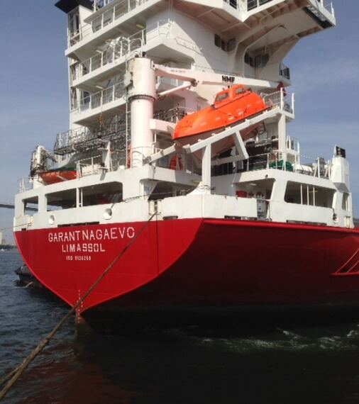
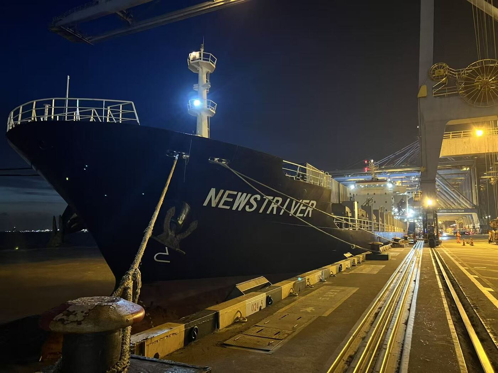

UNITY LINE
На линии работают суда NEWSTRIVER и HE XING 7. Расписания — в разделе «Расписания и тарифы».
К расписаниям →Собственные суда для каботажных линий и тяжёлых грузов.
Выберите судно, чтобы увидеть технические данные и карту маршрута.

| Тип | Многоцелевое судно (МПП), проект «Сокол» |
|---|---|
| Год постройки | 2014 |
| Оператор | ООО «Восточное судоходное товарищество» |
| Длина / ширина | — пример |
| Дедвейт | — пример |
| Вместимость | — пример |
| Грузы | Контейнеры, генеральные, проектные, тяжеловесные |

| Тип | Контейнеровоз |
|---|---|
| Условия приобретения | Бербоут-чартер, 2015 г. |
| Оператор | Каботажные линии Гарант Интермодал |
| Длина / ширина | — пример |
| Дедвейт | — пример |
| Вместимость, TEU | — пример |
| Грузы | Контейнерные и генеральные грузы |
Планируем подключить онлайн-карту движения теплоходов (AIS), чтобы клиент видел положение судна в реальном времени.
На линии работают суда NEWSTRIVER и HE XING 7. Расписания — в разделе «Расписания и тарифы».
К расписаниям →
Оставьте маршрут и параметры груза — менеджер ответит в рабочее время.